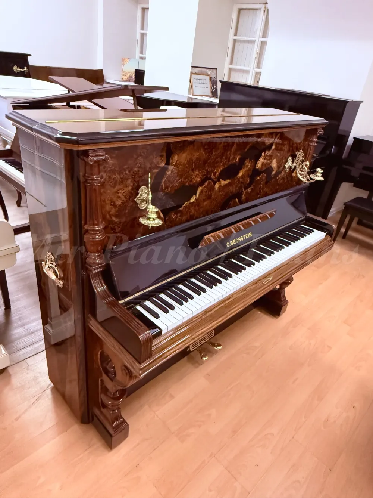
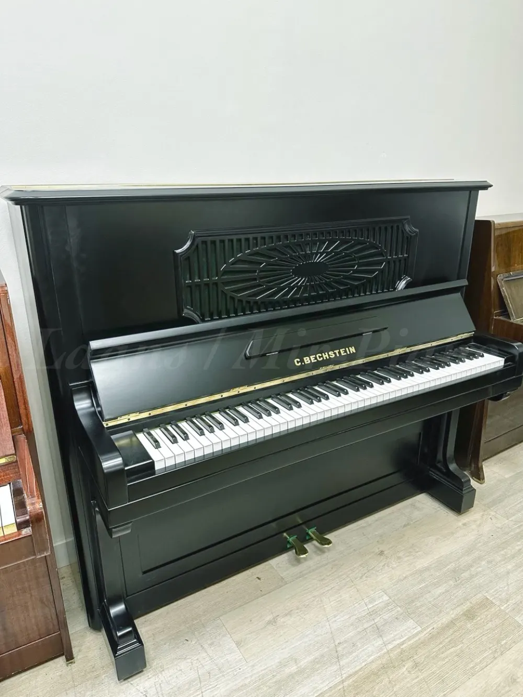
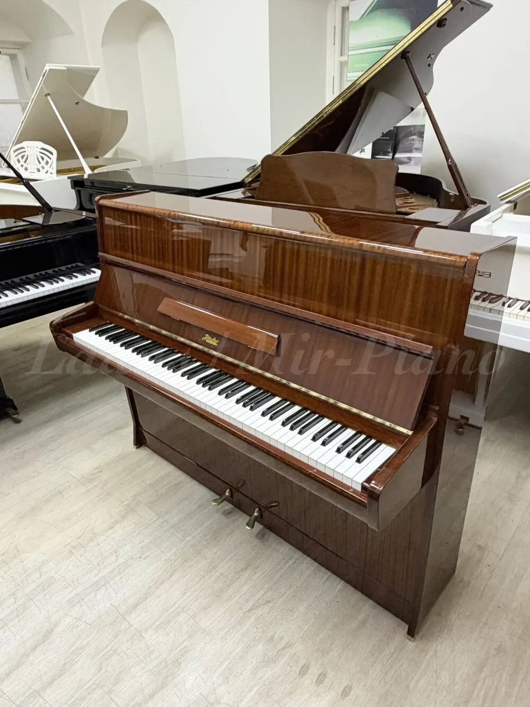
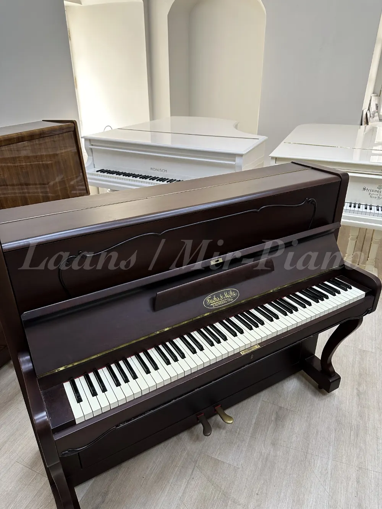
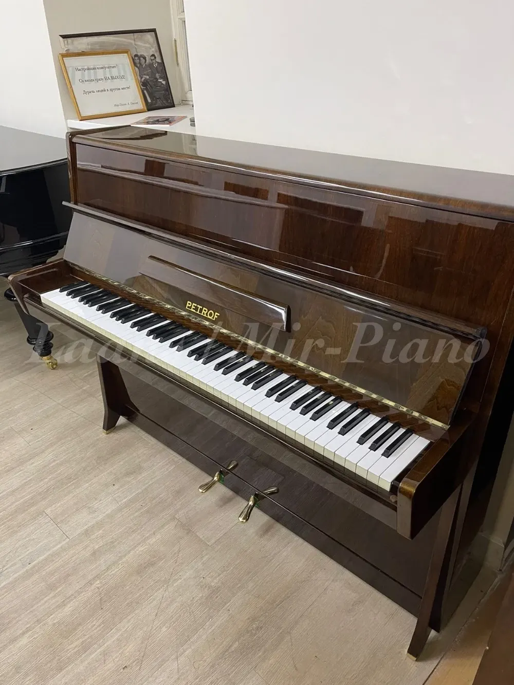
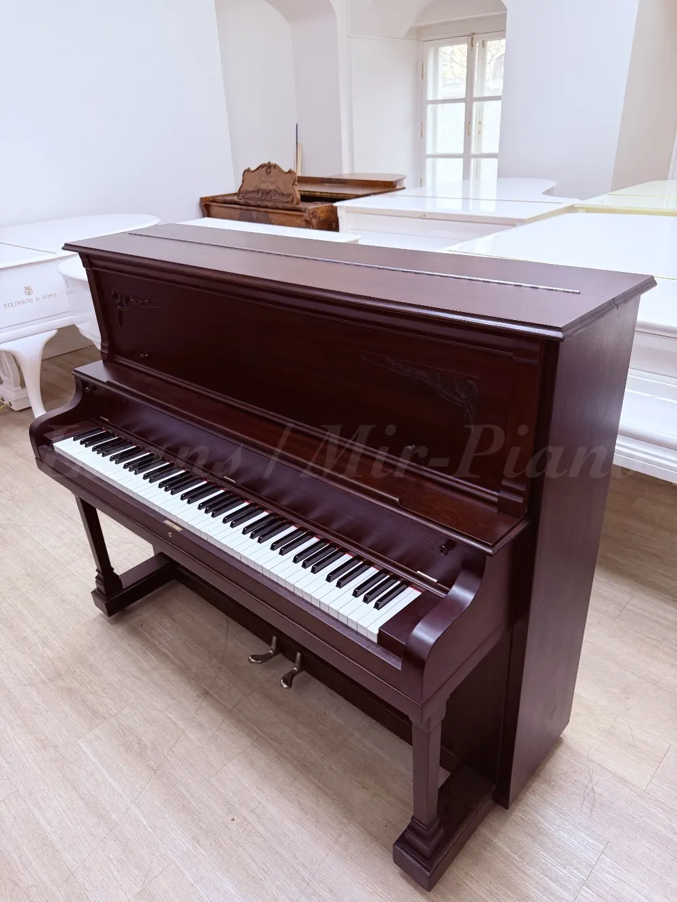

Petrof
360 000 ₽
13 пианино от 260 000 до 1 500 000 ₽. Салон публикует высоту для тех моделей, где провёл замер.
Показано 13 из 13











Попробуйте другую марку или увеличьте допустимую цену.